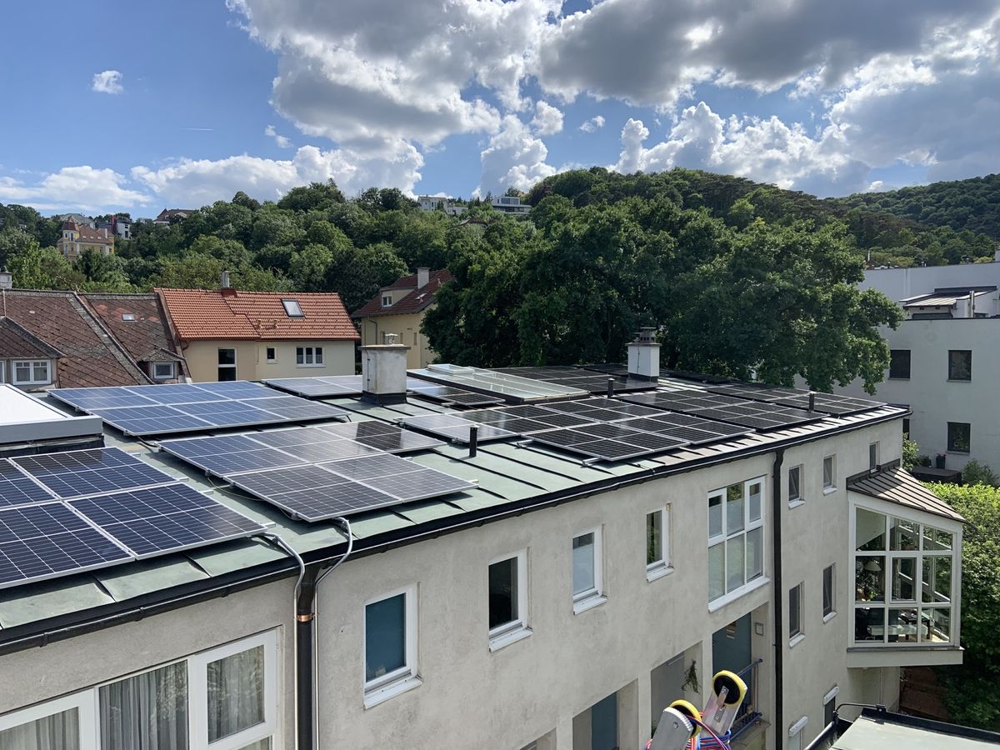

01 · Photovoltaik & Ladeinfrastruktur
Sonne ernten, selbst verbrauchen, später erweitern.
Wir planen die Anlage nach dem Verbrauch, nicht nach der Dachfläche. Was ihr selbst verbraucht, ist ein Mehrfaches von dem wert, was ins Netz geht – deshalb reden wir zuerst über Wärmepumpe, Auto und Tagesablauf und erst dann über Module.